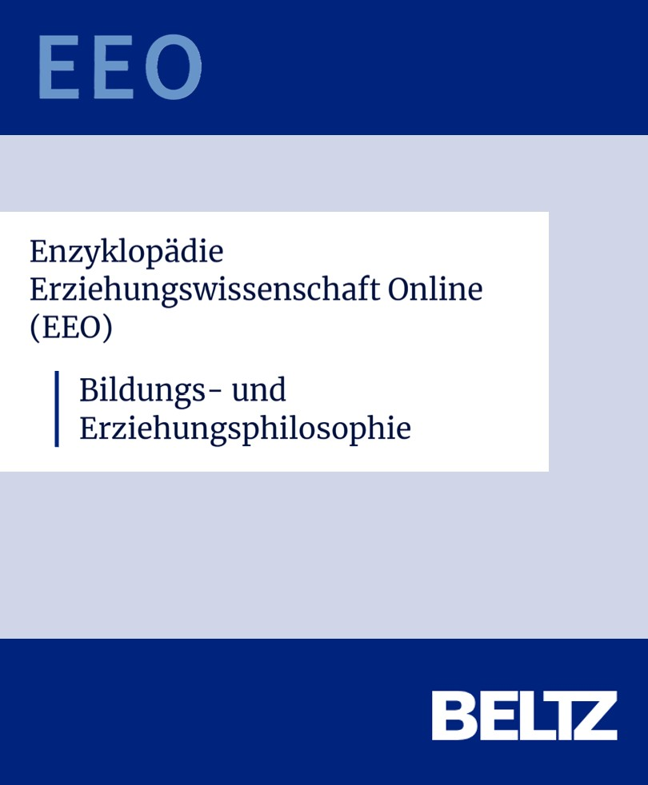
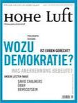

Publikationen
RIS-Datei





Lehre
I · Allgemeine Erziehungswissenschaft / Allgemeine Pädagogik
II · Qualitative Forschung
Vorträge & Tagungsorganisation
Ausgewählte Vorträge
Tagungsorganisation
Projekte
Lehrmaterialien
Wissenschaftliches Schreiben ist keine Technik, die man auswendig lernt — es ist eine Denkform, die man sich erarbeitet. Die folgenden Materialien begleiten diesen Prozess: vom ersten thematischen Interesse bis zur abgabefertigen Hausarbeit. Ergänzend steht ein Erklärungsvideo zur Verfügung, das zentrale Schritte des wissenschaftlichen Arbeitens anschaulich durchgeht.
Einführungsvideo
Wissenschaftspropädeutik
Materialien und Orientierungshilfen für das wissenschaftliche Schreiben — von der ersten Themenidee bis zum fertigen Fazit.
Kontakt
Für Anfragen zu Forschungskooperationen, Gutachten, Lehrveranstaltungen oder allgemeine Korrespondenz bin ich gerne per E-Mail erreichbar.
Universität Tübingen
Institut für Erziehungswissenschaft
Abteilung Allgemeine Pädagogik
Münzgasse 22–30
72070 Tübingen